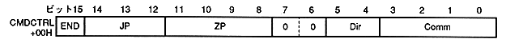

Return to previous page ｜ Return to menu ｜ Go to next page
Chapter 6 Command Table
-
6.1 CMDCTRL (control word)
- CMDCTRL specifies the command, controls the command table, reverses the sprite and specifies the fixed point. CMDCTRL is 16 bits at the command table start address + 00H, and the bit configuration is as follows. Set unused bits to 0.

- End bit: end bit (END), bit 15
- Indicates a drawing end command. The command selection bit is valid when it is not a drawing end command.
- Jump format: Jump select (JP), bits 14-12
- Indicates how to specify the command table to be read (fetched) next.
- Zoom point bit: zoom point (ZP), bits 11-8
- Indicates the zoom point (fixed point) for the rectangular sprite drawing command. The zoom point specifies the reference point for inversion and enlargement / reduction.
- Character reading direction bit: character read direction (Dir), bits 5-4
- Indicates the reading direction from the character pattern table when using the texture drawing command.
- Command selection bit: command select (Comm), bits 3 to 0
- Indicates the command function. Command selection is invalid when the end bit is the end command.
Return to previous page ｜ Return to menu ｜ Go to next page